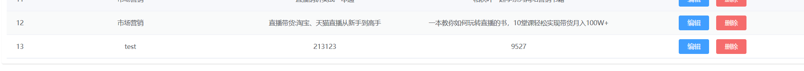
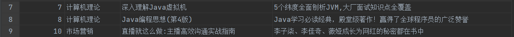
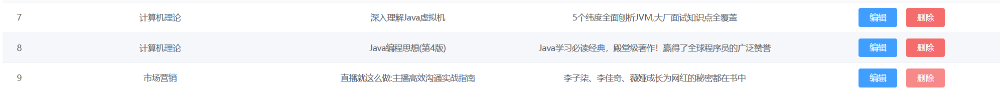
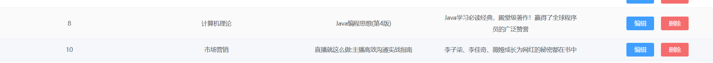

# SSM 整合
前面我们已经把 Mybatis 、 Spring 和 SpringMVC 三个框架进行了学习，那现在我们把这三个框架整合在一起，来完成我们的业务功能开发，具体如何来整合，我们一步步来学习。
# 流程分析
- 创建工程
- 创建一个 Maven 的 web 工程
- pom.xml 添加 SSM 需要的依赖 jar 包
- 编写 Web 项目的入口配置类，实现
AbstractAnnotationConfigDispatcherServletInitializer重写以下方法getRootConfigClasses()：返回 Spring 的配置类 --> 需要SpringConfig配置类getServletConfigClasses()：返回 SpringMVC 的配置类 --> 需要SpringMvcConfig配置类getServletMappings(): 设置 SpringMVC 请求拦截路径规则getServletFilters()：设置过滤器，解决 POST 请求中文乱码问题
- SSM 整合 (重点是各个配置的编写)
SpringConfig- 标识该类为配置类，使用
@Configuration - 扫描
Service所在的包，使用@ComponentScan - 在
Service层要管理事务，使用@EnableTransactionManagement - 读取外部的
properties配置文件，使用@PropertySource - 整合
Mybatis需要引入 Mybatis 相关配置类，使用@Import- 第三方数据源配置类
JdbcConfig - 构建 DataSource 数据源，DruidDataSouroce，需要注入数据库连接四要素，使用
@Bean、@Value - 构建平台事务管理器，DataSourceTransactionManager，使用
@Bean - Mybatis 配置类
MybatisConfig - 构建
SqlSessionFactoryBean并设置别名扫描与数据源，使用@Bean - 构建
MapperScannerConfigurer并设置 DAO 层的包扫描
- 第三方数据源配置类
- 标识该类为配置类，使用
SpringMvcConfig- 标识该类为配置类，使用
@Configuratio - 扫描
Controller所在的包，使用@ComponentScan - 开启 SpringMVC 注解支持，使用
@EnableWebMvc
- 标识该类为配置类，使用
- 功能模块 (与具体的业务模块有关)
- 创建数据库表
- 根据数据库表创建对应的模型类
- 通过 Dao 层完成数据库表的增删改查 (接口 + 自动代理)
- 编写
Service层 (Service 接口 + 实现类)@Service@Transactional- 整合 Junit 对业务层进行单元测试
@RunWith@ContextConfiguration@Test
- 编写
Controller层- 接收请求
@RequestMapping、@GetMapping、@PostMapping、@PutMapping、@DeleteMapping - 接收数据 简单、POJO、嵌套 POJO、集合、数组、JSON 数据类型
@RequestParam@PathVariable@RequestBody
- 转发业务层
@Autowired
- 响应结果
@ResponseBody
- 接收请求
# 整合配置
分析完毕之后，我们就一步步来完成我们的 SSM 整合
步骤一：创建 Maven 的 web 项目

步骤二：导入坐标

<dependencies> | |
<dependency> | |
<groupId>org.springframework</groupId> | |
<artifactId>spring-webmvc</artifactId> | |
<version>5.2.10.RELEASE</version> | |
</dependency> | |
<dependency> | |
<groupId>org.springframework</groupId> | |
<artifactId>spring-jdbc</artifactId> | |
<version>5.2.10.RELEASE</version> | |
</dependency> | |
<dependency> | |
<groupId>org.springframework</groupId> | |
<artifactId>spring-test</artifactId> | |
<version>5.2.10.RELEASE</version> | |
</dependency> | |
<dependency> | |
<groupId>org.mybatis</groupId> | |
<artifactId>mybatis</artifactId> | |
<version>3.5.6</version> | |
</dependency> | |
<dependency> | |
<groupId>org.mybatis</groupId> | |
<artifactId>mybatis-spring</artifactId> | |
<version>1.3.0</version> | |
</dependency> | |
<dependency> | |
<groupId>mysql</groupId> | |
<artifactId>mysql-connector-java</artifactId> | |
<version>5.1.46</version> | |
</dependency> | |
<dependency> | |
<groupId>com.alibaba</groupId> | |
<artifactId>druid</artifactId> | |
<version>1.1.16</version> | |
</dependency> | |
<dependency> | |
<groupId>junit</groupId> | |
<artifactId>junit</artifactId> | |
<version>4.12</version> | |
<scope>test</scope> | |
</dependency> | |
<dependency> | |
<groupId>javax.servlet</groupId> | |
<artifactId>javax.servlet-api</artifactId> | |
<version>3.1.0</version> | |
<scope>provided</scope> | |
</dependency> | |
<dependency> | |
<groupId>com.fasterxml.jackson.core</groupId> | |
<artifactId>jackson-databind</artifactId> | |
<version>2.9.0</version> | |
</dependency> | |
</dependencies> |
步骤 3: 创建项目包结构
- config 目录存放的是相关的配置类
- controller 编写的是 Controller 类
- dao 存放的是 Dao 接口，因为使用的是 Mapper 接口代理方式，所以没有实现类包
- service 存的是 Service 接口，impl 存放的是 Service 实现类
- resources: 存入的是配置文件，如 Jdbc.properties
- webapp: 目录可以存放静态资源
- test/java: 存放的是测试类
步骤 4: 创建 SpringConfig 配置类
@Configuration | |
@ComponentScan({"com.itheima.service"}) | |
@PropertySource("classpath:jdbc.properties") | |
@Import({JdbcConfig.class,MyBatisConfig.class}) | |
@EnableTransactionManagement | |
public class SpringConfig { | |
} |
- 步骤 5: 创建 JdbcConfig 配置类
public class JdbcConfig { | |
@Value("${jdbc.driver}") | |
private String driver; | |
@Value("${jdbc.url}") | |
private String url; | |
@Value("${jdbc.username}") | |
private String username; | |
@Value("${jdbc.password}") | |
private String password; | |
@Bean | |
public DataSource dataSource(){ | |
DruidDataSource dataSource = new DruidDataSource(); | |
dataSource.setDriverClassName(driver); | |
dataSource.setUrl(url); | |
dataSource.setUsername(username); | |
dataSource.setPassword(password); | |
return dataSource; | |
} | |
@Bean | |
public PlatformTransactionManager transactionManager(DataSource dataSource){ | |
DataSourceTransactionManager ds = new DataSourceTransactionManager(); | |
ds.setDataSource(dataSource); | |
return ds; | |
} | |
} |
- 步骤 6: 创建 MybatisConfig 配置类
public class MyBatisConfig { | |
@Bean | |
public SqlSessionFactoryBean sqlSessionFactory(DataSource dataSource){ | |
SqlSessionFactoryBean factoryBean = new SqlSessionFactoryBean(); | |
factoryBean.setDataSource(dataSource); | |
factoryBean.setTypeAliasesPackage("com.itheima.domain"); | |
return factoryBean; | |
} | |
@Bean | |
public MapperScannerConfigurer mapperScannerConfigurer(){ | |
MapperScannerConfigurer msc = new MapperScannerConfigurer(); | |
msc.setBasePackage("com.itheima.dao"); | |
return msc; | |
} | |
} |
- 步骤 7: 创建 jdbc.properties
在 resources 下提供 jdbc.properties, 设置数据库连接四要素
jdbc.driver=com.mysql.jdbc.Driver | |
jdbc.url=jdbc:mysql://localhost:3306/ssm_db | |
jdbc.username=root | |
jdbc.password=root |
- 步骤 8: 创建 SpringMVC 配置类
@Configuration | |
@ComponentScan("com.itheima.controller") | |
@EnableWebMvc | |
public class SpringMvcConfig { | |
} |
- 步骤 9: 创建 Web 项目入口配置类
public class ServletConfig extends AbstractAnnotationConfigDispatcherServletInitializer { | |
// 加载 Spring 配置类 | |
protected Class<?>[] getRootConfigClasses() { | |
return new Class[]{SpringConfig.class}; | |
} | |
// 加载 SpringMVC 配置类 | |
protected Class<?>[] getServletConfigClasses() { | |
return new Class[]{SpringMvcConfig.class}; | |
} | |
// 设置 SpringMVC 请求地址拦截规则 | |
protected String[] getServletMappings() { | |
return new String[]{"/"}; | |
} | |
// 设置 post 请求中文乱码过滤器 | |
@Override | |
protected Filter[] getServletFilters() { | |
CharacterEncodingFilter filter = new CharacterEncodingFilter(); | |
filter.setEncoding("utf-8"); | |
return new Filter[]{filter}; | |
} | |
} |
至此 SSM 整合的环境就已经搭建好了。在这个环境上，我们如何进行功能模块的开发呢？
# 功能模块开发
需求 对表 tbl_book 进行新增、修改、删除、根据 ID 查询和查询所有
- 步骤 1: 创建数据库及表
create database ssm_db character set utf8; | |
use ssm_db; | |
create table tbl_book( | |
id int primary key auto_increment, | |
type varchar(20), | |
name varchar(50), | |
description varchar(255) | |
) | |
insert into `tbl_book`(`id`,`type`,`name`,`description`) values (1,'计算机理论','Spring实战 第五版','Spring入门经典教程，深入理解Spring原理技术内幕'),(2,'计算机理论','Spring 5核心原理与30个类手写实践','十年沉淀之作，手写Spring精华思想'),(3,'计算机理论','Spring 5设计模式','深入Spring源码刨析Spring源码中蕴含的10大设计模式'),(4,'计算机理论','Spring MVC+Mybatis开发从入门到项目实战','全方位解析面向Web应用的轻量级框架，带你成为Spring MVC开发高手'),(5,'计算机理论','轻量级Java Web企业应用实战','源码级刨析Spring框架，适合已掌握Java基础的读者'),(6,'计算机理论','Java核心技术 卷Ⅰ 基础知识(原书第11版)','Core Java第11版，Jolt大奖获奖作品，针对Java SE9、10、11全面更新'),(7,'计算机理论','深入理解Java虚拟机','5个纬度全面刨析JVM,大厂面试知识点全覆盖'),(8,'计算机理论','Java编程思想(第4版)','Java学习必读经典，殿堂级著作！赢得了全球程序员的广泛赞誉'),(9,'计算机理论','零基础学Java(全彩版)','零基础自学编程的入门图书，由浅入深，详解Java语言的编程思想和核心技术'),(10,'市场营销','直播就这么做:主播高效沟通实战指南','李子柒、李佳奇、薇娅成长为网红的秘密都在书中'),(11,'市场营销','直播销讲实战一本通','和秋叶一起学系列网络营销书籍'),(12,'市场营销','直播带货:淘宝、天猫直播从新手到高手','一本教你如何玩转直播的书，10堂课轻松实现带货月入3W+'); |
- 步骤 2: 编写模型类
public class Book { | |
private Integer id; | |
private String type; | |
private String name; | |
private String description; | |
//getter...setter...toString 省略 | |
} |
- 步骤 3: 编写 Dao 接口
public interface BookDao { | |
// @Insert("insert into tbl_book values(null,#{type},#{name},#{description})") | |
@Insert("insert into tbl_book (type,name,description) values(#{type},#{name},#{description})") | |
public void save(Book book); | |
@Update("update tbl_book set type = #{type}, name = #{name}, description = #{description} where id = #{id}") | |
public void update(Book book); | |
@Delete("delete from tbl_book where id = #{id}") | |
public void delete(Integer id); | |
@Select("select * from tbl_book where id = #{id}") | |
public Book getById(Integer id); | |
@Select("select * from tbl_book") | |
public List<Book> getAll(); | |
} |
- 步骤 4: 编写 Service 接口和实现类
@Transactional | |
public interface BookService { | |
/** | |
* 保存 | |
* @param book | |
* @return | |
*/ | |
public boolean save(Book book); | |
/** | |
* 修改 | |
* @param book | |
* @return | |
*/ | |
public boolean update(Book book); | |
/** | |
* 按id删除 | |
* @param id | |
* @return | |
*/ | |
public boolean delete(Integer id); | |
/** | |
* 按id查询 | |
* @param id | |
* @return | |
*/ | |
public Book getById(Integer id); | |
/** | |
* 查询全部 | |
* @return | |
*/ | |
public List<Book> getAll(); | |
} |
@Service | |
public class BookServiceImpl implements BookService { | |
@Autowired | |
private BookDao bookDao; | |
public boolean save(Book book) { | |
bookDao.save(book); | |
return true; | |
} | |
public boolean update(Book book) { | |
bookDao.update(book); | |
return true; | |
} | |
public boolean delete(Integer id) { | |
bookDao.delete(id); | |
return true; | |
} | |
public Book getById(Integer id) { | |
return bookDao.getById(id); | |
} | |
public List<Book> getAll() { | |
return bookDao.getAll(); | |
} | |
} |
说明
- bookDao 在 Service 中注入的会提示一个红线提示，为什么呢？
- BookDao 是一个接口，没有实现类，接口是不能创建对象的，所以最终注入的应该是代理对象
- 代理对象是由 Spring 的 IOC 容器来创建管理的
- IOC 容器又是在 Web 服务器启动的时候才会创建
- IDEA 在检测依赖关系的时候，没有找到适合的类注入，所以会提示错误提示
- 但是程序运行的时候，代理对象就会被创建，框架会使用 DI 进行注入，所以程序运行无影响。
- 如何解决上述问题？
- 可以不用理会，因为运行是正常的
- 设置错误提示级别
- 步骤 5: 编写 Contorller 类
@RestController | |
@RequestMapping("/books") | |
public class BookController { | |
@Autowired | |
private BookService bookService; | |
@PostMapping | |
public boolean save(@RequestBody Book book) { | |
return bookService.save(book); | |
} | |
@PutMapping | |
public boolean update(@RequestBody Book book) { | |
return bookService.update(book); | |
} | |
@DeleteMapping("/{id}") | |
public boolean delete(@PathVariable Integer id) { | |
return bookService.delete(id); | |
} | |
@GetMapping("/{id}") | |
public Book getById(@PathVariable Integer id) { | |
return bookService.getById(id); | |
} | |
@GetMapping | |
public List<Book> getAll() { | |
return bookService.getAll(); | |
} | |
} |
对于图书模块的增删改查就已经完成了编写，我们可以从后往前写也可以从前往后写，最终只需要能把功能实现即可。
接下来我们就先把业务层的代码使用 Spring 整合 Junit 的知识点进行单元测试:
## 单元测试
- 步骤 1: 新建测试类
@RunWith(SpringJUnit4ClassRunner.class) | |
@ContextConfiguration(classes = SpringConfig.class) | |
public class BookServiceTest { | |
} |
- 步骤 2: 注入 Service 类
@RunWith(SpringJUnit4ClassRunner.class) | |
@ContextConfiguration(classes = SpringConfig.class) | |
public class BookServiceTest { | |
@Autowired | |
private BookService bookService; | |
} |
- 步骤 3: 编写测试方法，先对查询进行单元测试
@RunWith(SpringJUnit4ClassRunner.class) | |
@ContextConfiguration(classes = SpringConfig.class) | |
public class BookServiceTest { | |
@Autowired | |
private BookService bookService; | |
@Test | |
public void testGetById(){ | |
Book book = bookService.getById(1); | |
System.out.println(book); | |
} | |
@Test | |
public void testGetAll(){ | |
List<Book> all = bookService.getAll(); | |
System.out.println(all); | |
} | |
} |
运行测试方法，可以查询到对应的数据
# PostMan 测试
# 新增
发送 POST 请求与数据，访问 localhost:8080/books
{ | |
"type":"类别测试数据", | |
"name":"书名测试数据", | |
"description":"描述测试数据" | |
} |
数据库中能看到新增的数据
# 修改
发送 PUT 请求与数据，访问 localhost:8080/books
{ | |
"id":13, | |
"type":"类别测试数据", | |
"name":"书名测试数据", | |
"description":"描述测试数据" | |
} |
数据库中能看到修改后的数据
# 删除
http://localhost/books/13
发送 DELETE 请求，访问 localhost:8080/books/13
数据库中能看到 id 为 13 的数据不见了
# 查询单个
发送 GET 请求，访问 localhost:8080/books/1
可以查询到 ID 为 1 的数据，在 PostMan 中表现为 JSON 数据
{ | |
"id": 1, | |
"type": "计算机理论", | |
"name": "Spring实战 第五版", | |
"description": "Spring入门经典教程，深入理解Spring原理技术内幕" | |
} |
# 查询所有
发送 GET 请求，访问 localhost:8080/books
PostMan 中以 JSON 对象数组的形式显示了数据库中的所有数据
# 统一结果封装
# 表现层与前端数据传输协议定义
SSM 整合以及功能模块开发完成后，接下来，我们在上述案例的基础上分析下有哪些问题需要我们去解决下。首先第一个问题是:
- 在 Controller 层增删改返回给前端的是 boolean 类型数据
true - 在 Controller 层查询单个返回给前端的是对象
{ | |
"id": 1, | |
"type": "计算机理论", | |
"name": "Spring实战 第五版", | |
"description": "Spring入门经典教程，深入理解Spring原理技术内幕" | |
} |
- 在 Controller 层查询所有返回给前端的是集合对象
[ | |
{ | |
"id": 1, | |
"type": "计算机理论", | |
"name": "Spring实战 第五版", | |
"description": "Spring入门经典教程，深入理解Spring原理技术内幕" | |
}, | |
{ | |
"id": 2, | |
"type": "计算机理论", | |
"name": "Spring 5核心原理与30个类手写实践", | |
"description": "十年沉淀之作，手写Spring精华思想" | |
}, | |
... | |
] |
目前我们就已经有三种数据类型返回给前端，如果随着业务的增长，需要返回的数据类型会越来越多。对于前端开发人员在解析数据的时候就比较凌乱了，所以对于前端来说，如果后台能够返回一个统一的数据结果，前端在解析的时候就可以按照一种方式进行解析。开发就会变得更加简单。
所以我们就想能不能将返回结果的数据进行统一，具体如何来做，大体的思路为:
- 为了封装返回的结果数据: 创建结果模型类，封装数据到 data 属性中
- 为了封装返回的数据是何种操作及是否操作成功: 封装操作结果到 code 属性中
- 操作失败后为了封装返回的错误信息: 封装特殊消息到 message (msg) 属性中
根据分析，我们可以设置统一数据返回结果类
public class Result{ | |
private Object data; | |
private Integer code; | |
private String msg; | |
} |
注意 Result 类名及类中的字段并不是固定的，可以根据需要自行增减提供若干个构造方法，方便操作。
# 表现层与前端数据传输协议实现
前面我们已经分析了如何封装返回结果数据，现在我们来具体实现一下
- 环境准备
- 创建一个 Web 的 Maven 项目
- pom.xml 添加 SSM 整合所需 jar 包
- 创建对应的配置类
- 编写 Controller、Service 接口、Service 实现类、Dao 接口和模型类
- resources 下提供 jdbc.properties 配置文件
和 SSM 整合的内容是一致的
对于结果封装，我们应该是在表现层进行处理，所以我们把结果类放在 controller 包下，当然你也可以放在 domain 包，这个都是可以的，具体如何实现结果封装，具体的步骤如下
- 步骤 1: 创建 Result 类
public class Result { | |
// 描述统一格式中的数据 | |
private Object data; | |
// 描述统一格式中的编码，用于区分操作，可以简化配置 0 或 1 表示成功失败 | |
private Integer code; | |
// 描述统一格式中的消息，可选属性 | |
private String msg; | |
public Result() { | |
} | |
// 构造方法是方便对象的创建 | |
public Result(Integer code,Object data) { | |
this.data = data; | |
this.code = code; | |
} | |
// 构造方法是方便对象的创建 | |
public Result(Integer code, Object data, String msg) { | |
this.data = data; | |
this.code = code; | |
this.msg = msg; | |
} | |
//setter...getter... 省略 | |
} |
- 步骤 2: 定义返回码 Code 类
// 状态码 | |
public class Code { | |
public static final Integer SAVE_OK = 20011; | |
public static final Integer DELETE_OK = 20021; | |
public static final Integer UPDATE_OK = 20031; | |
public static final Integer GET_OK = 20041; | |
public static final Integer SAVE_ERR = 20010; | |
public static final Integer DELETE_ERR = 20020; | |
public static final Integer UPDATE_ERR = 20030; | |
public static final Integer GET_ERR = 20040; | |
} |
注意 code 类中的常量设计也不是固定的，可以根据需要自行增减，例如将查询再进行细分为 GET_OK,GET_ALL_OK,GET_PAGE_OK 等。
- 步骤 3: 修改 Controller 类的返回值
// 统一每一个控制器方法返回值 | |
@RestController | |
@RequestMapping("/books") | |
public class BookController { | |
@Autowired | |
private BookService bookService; | |
@PostMapping | |
public Result save(@RequestBody Book book) { | |
boolean flag = bookService.save(book); | |
return new Result(flag ? Code.SAVE_OK:Code.SAVE_ERR,flag); | |
} | |
@PutMapping | |
public Result update(@RequestBody Book book) { | |
boolean flag = bookService.update(book); | |
return new Result(flag ? Code.UPDATE_OK:Code.UPDATE_ERR,flag); | |
} | |
@DeleteMapping("/{id}") | |
public Result delete(@PathVariable Integer id) { | |
boolean flag = bookService.delete(id); | |
return new Result(flag ? Code.DELETE_OK:Code.DELETE_ERR,flag); | |
} | |
@GetMapping("/{id}") | |
public Result getById(@PathVariable Integer id) { | |
Book book = bookService.getById(id); | |
Integer code = book != null ? Code.GET_OK : Code.GET_ERR; | |
String msg = book != null ? "" : "数据查询失败，请重试！"; | |
return new Result(code,book,msg); | |
} | |
@GetMapping | |
public Result getAll() { | |
List<Book> bookList = bookService.getAll(); | |
Integer code = bookList != null ? Code.GET_OK : Code.GET_ERR; | |
String msg = bookList != null ? "" : "数据查询失败，请重试！"; | |
return new Result(code,bookList,msg); | |
} | |
} |
- 步骤 4: 启动服务测试
五个方法的测试结果如下
{ | |
"code": 20011, | |
"data": true, | |
"msg": null | |
} |
{ | |
"code": 20021, | |
"data": true, | |
"msg": null | |
} |
{ | |
"code": 20031, | |
"data": true, | |
"msg": null | |
} |
{ | |
"code": 20041, | |
"data": { | |
"id": 1, | |
"type": "计算机理论", | |
"name": "Spring实战 第五版", | |
"description": "Spring入门经典教程，深入理解Spring原理技术内幕" | |
}, | |
"msg": "" | |
} |
{ | |
"code": 20041, | |
"data": [ | |
{ | |
"id": 1, | |
"type": "计算机理论", | |
"name": "Spring实战 第五版", | |
"description": "Spring入门经典教程，深入理解Spring原理技术内幕" | |
}, | |
{ | |
"id": 2, | |
"type": "计算机理论", | |
"name": "Spring 5核心原理与30个类手写实践", | |
"description": "十年沉淀之作，手写Spring精华思想" | |
}, | |
{ | |
"id": 3, | |
"type": "计算机理论", | |
"name": "Spring 5设计模式", | |
"description": "深入Spring源码刨析Spring源码中蕴含的10大设计模式" | |
}, | |
{ | |
"id": 4, | |
"type": "计算机理论", | |
"name": "Spring MVC+Mybatis开发从入门到项目实战", | |
"description": "全方位解析面向Web应用的轻量级框架，带你成为Spring MVC开发高手" | |
}, | |
{ | |
"id": 5, | |
"type": "计算机理论", | |
"name": "轻量级Java Web企业应用实战", | |
"description": "源码级刨析Spring框架，适合已掌握Java基础的读者" | |
}, | |
{ | |
"id": 6, | |
"type": "计算机理论", | |
"name": "Java核心技术 卷Ⅰ 基础知识(原书第11版)", | |
"description": "Core Java第11版，Jolt大奖获奖作品，针对Java SE9、10、11全面更新" | |
}, | |
{ | |
"id": 7, | |
"type": "计算机理论", | |
"name": "深入理解Java虚拟机", | |
"description": "5个纬度全面刨析JVM,大厂面试知识点全覆盖" | |
}, | |
{ | |
"id": 8, | |
"type": "计算机理论", | |
"name": "Java编程思想(第4版)", | |
"description": "Java学习必读经典，殿堂级著作！赢得了全球程序员的广泛赞誉" | |
}, | |
{ | |
"id": 9, | |
"type": "计算机理论", | |
"name": "零基础学Java(全彩版)", | |
"description": "零基础自学编程的入门图书，由浅入深，详解Java语言的编程思想和核心技术" | |
}, | |
{ | |
"id": 10, | |
"type": "市场营销", | |
"name": "直播就这么做:主播高效沟通实战指南", | |
"description": "李子柒、李佳奇、薇娅成长为网红的秘密都在书中" | |
}, | |
{ | |
"id": 11, | |
"type": "市场营销", | |
"name": "直播销讲实战一本通", | |
"description": "和秋叶一起学系列网络营销书籍" | |
}, | |
{ | |
"id": 12, | |
"type": "市场营销", | |
"name": "直播带货:淘宝、天猫直播从新手到高手", | |
"description": "一本教你如何玩转直播的书，10堂课轻松实现带货月入3W+" | |
}, | |
{ | |
"id": 14, | |
"type": "类别测试数据", | |
"name": "书名测试数据9527", | |
"description": "描述测试数据" | |
}, | |
{ | |
"id": 15, | |
"type": "类别测试数据", | |
"name": "书名测试数据", | |
"description": "描述测试数据" | |
}, | |
{ | |
"id": 16, | |
"type": "类别测试数据", | |
"name": "书名测试数据", | |
"description": "描述测试数据" | |
} | |
], | |
"msg": "" | |
} |
至此，我们的返回结果就已经能以一种统一的格式返回给前端。前端根据返回的结果，先从中获取 code , 根据 code 判断，如果成功则取 data 属性的值，如果失败，则取 msg 中的值做提示。
# 统一异常处理
# 问题描述
在讲解这一部分知识点之前，我们先来演示个效果，修改 BookController 类的 getById 方法
@GetMapping("/{id}") | |
public Result getById(@PathVariable Integer id) { | |
// 手动添加一个错误信息 | |
if(id==1){ | |
int i = 1/0; | |
} | |
Book book = bookService.getById(id); | |
Integer code = book != null ? Code.GET_OK : Code.GET_ERR; | |
String msg = book != null ? "" : "数据查询失败，请重试！"; | |
return new Result(code,book,msg); | |
} |
重新启动运行项目，使用 PostMan 发送请求，当传入的 id 为 1，则会出现如下效果：

前端接收到这个信息后和之前我们约定的格式不一致，这个问题该如何解决？
在解决问题之前，我们先来看下异常的种类及出现异常的原因:
- 框架内部抛出的异常：因使用不合规导致
- 数据层抛出的异常：因外部服务器故障导致（例如：服务器访问超时）
- 业务层抛出的异常：因业务逻辑书写错误导致（例如：遍历业务书写操作，导致索引异常等）
- 表现层抛出的异常：因数据收集、校验等规则导致（例如：不匹配的数据类型间导致异常）
- 工具类抛出的异常：因工具类书写不严谨不够健壮导致（例如：必要释放的连接长期未释放等）
看完上面这些出现异常的位置，你会发现，在我们开发的任何一个位置都有可能出现异常，而且这些异常是不能避免的。所以我们就得将异常进行处理。
思考
- 各个层级均出现异常，异常处理代码书写在哪一层？
- 所有的异常均抛出到表现层进行处理
- 异常的种类很多，表现层如何将所有的异常都处理到呢？
- 异常分类
- 表现层处理异常，每个方法中单独书写，代码书写量巨大且意义不强，如何解决？
- AOP
对于上面这些问题及解决方案，SpringMVC 已经为我们提供了一套解决方案:
- 异常处理器:
- 集中的、统一的处理项目中出现的异常。
@RestControllerAdvice | |
public class ProjectExceptionAdvice { | |
@ExceptionHandler(Exception.class) | |
public Result doException(Exception ex) { | |
return new Result(666, null); | |
} | |
} |
# 异常处理器的使用
# 环境准备
- 创建一个 Web 的 Maven 项目
- pom.xml 添加 SSM 整合所需 jar 包
- 创建对应的配置类
- 编写 Controller、Service 接口、Service 实现类、Dao 接口和模型类
- resources 下提供 jdbc.properties 配置文件
内容参考前面的项目或者直接使用前面的项目进行本节内容的学习。
最终创建好的项目结构如下:
# 使用步骤
- 步骤 1: 创建异常处理器类
//@RestControllerAdvice 用于标识当前类为 REST 风格对应的异常处理器 | |
@RestControllerAdvice | |
public class ProjectExceptionAdvice { | |
// 除了自定义的异常处理器，保留对 Exception 类型的异常处理，用于处理非预期的异常 | |
@ExceptionHandler(Exception.class) | |
public void doException(Exception ex){ | |
System.out.println("这有个异常！") | |
} | |
} |
确保 SpringMvcConfig 能够扫描到异常处理器类
- 步骤 2: 让程序抛出异常
修改 BookController 的 getById 方法，添加 int i = 1/0 .
@GetMapping("/{id}") | |
public Result getById(@PathVariable Integer id) { | |
int i = 1/0; | |
Book book = bookService.getById(id); | |
Integer code = book != null ? Code.GET_OK : Code.GET_ERR; | |
String msg = book != null ? "" : "数据查询失败，请重试！"; | |
return new Result(code,book,msg); | |
} |
- 步骤 3：运行程序，测试
使用 PostMan 发送 GET 请求访问 localhost:8080/books/1
控制台输出了 doException 中的语句，说明异常已经被拦截，且执行了 doException() 方法
- 步骤 4：异常处理器类返回结果给前端
//@RestControllerAdvice 用于标识当前类为 REST 风格对应的异常处理器 | |
@RestControllerAdvice | |
public class ProjectExceptionAdvice { | |
// 除了自定义的异常处理器，保留对 Exception 类型的异常处理，用于处理非预期的异常 | |
@ExceptionHandler(Exception.class) | |
public Result doException(Exception ex){ | |
System.out.println("这有个异常！") | |
return new Result(666,null,"这有个异常！"); | |
} | |
} |
重启服务器，让 postman 发送请求
{ | |
"code": 666, | |
"data": null, | |
"msg": "这有个异常！" | |
} |
至此，就算后台执行的过程中抛出异常，最终也能按照我们和前端约定好的格式返回给前端。
# 知识点
@RestControllerAdvice
| 名称 | @RestControllerAdvice |
|---|---|
| 类型 | 类注解 |
| 位置 | Rest 风格开发的控制器增强类定义上方 |
| 作用 | 为 Rest 风格开发的控制器类做增强 |
说明 此注解自带 @ResponseBody 注解与 @Component 注解，具备对应的功能
@ExceptionHandler
| 名称 | @ExceptionHandler |
|---|---|
| 类型 | 方法注解 |
| 位置 | 专用于异常处理的控制器方法上方 |
| 作用 | 设置指定异常的处理方案，功能等同于控制器方法，<br/> 出现异常后终止原始控制器执行，并转入当前方法执行 |
说明 此类方法可以根据处理的异常不同，制作多个方法分别处理对应的异常
# 项目异常处理方案
# 异常分类
异常处理器已经能够使用了，那么在项目中该如何来处理异常呢？
因为异常的种类有很多，如果每一个异常都对应一个 @ExceptionHandler，那得写多少个方法来处理各自的异常，所以我们在处理异常之前，需要对异常进行一个分类:
业务异常（BusinessException）- 规范的用户行为产生的异常
- 用户在页面输入内容的时候未按照指定格式进行数据填写，如在年龄框输入的是字符串
- 不规范的用户行为操作产生的异常
- 如用户手改 URL，故意传递错误数据
localhost:8080/books/略略略
- 如用户手改 URL，故意传递错误数据
- 规范的用户行为产生的异常
系统异常（SystemException）- 项目运行过程中可预计，但无法避免的异常
- 如服务器宕机
- 项目运行过程中可预计，但无法避免的异常
其他异常（Exception）- 编程人员未预期到的异常
- 如：系统找不到指定文件
- 编程人员未预期到的异常
将异常分类以后，针对不同类型的异常，要提供具体的解决方案:
# 异常解决方案
业务异常（BusinessException）- 发送对应消息传递给用户，提醒规范操作
- 大家常见的就是提示用户名已存在或密码格式不正确等
- 发送对应消息传递给用户，提醒规范操作
系统异常（SystemException）- 发送固定消息传递给用户，安抚用户
- 系统繁忙，请稍后再试
- 系统正在维护升级，请稍后再试
- 系统出问题，请联系系统管理员等
- 发送特定消息给运维人员，提醒维护
- 可以发送短信、邮箱或者是公司内部通信软件
- 记录日志
- 发消息给运维和记录日志对用户来说是不可见的，属于后台程序
- 发送固定消息传递给用户，安抚用户
其他异常（Exception）- 发送固定消息传递给用户，安抚用户
- 发送特定消息给编程人员，提醒维护（纳入预期范围内）
- 一般是程序没有考虑全，比如未做非空校验等
- 记录日志
# 具体实现
思路:
- 先通过自定义异常，完成 BusinessException 和 SystemException 的定义
- 将其他异常包装成自定义异常类型
- 在异常处理器类中对不同的异常进行处理
- 步骤 1: 自定义异常类
// 自定义异常处理器，用于封装异常信息，对异常进行分类 | |
public class SystemException extends RuntimeException{ | |
private Integer code; | |
public Integer getCode() { | |
return code; | |
} | |
public void setCode(Integer code) { | |
this.code = code; | |
} | |
public SystemException(Integer code, String message) { | |
super(message); | |
this.code = code; | |
} | |
public SystemException(Integer code, String message, Throwable cause) { | |
super(message, cause); | |
this.code = code; | |
} | |
} |
// 自定义异常处理器，用于封装异常信息，对异常进行分类 | |
public class BusinessException extends RuntimeException{ | |
private Integer code; | |
public Integer getCode() { | |
return code; | |
} | |
public void setCode(Integer code) { | |
this.code = code; | |
} | |
public BusinessException(Integer code, String message) { | |
super(message); | |
this.code = code; | |
} | |
public BusinessException(Integer code, String message, Throwable cause) { | |
super(message, cause); | |
this.code = code; | |
} | |
} |
- 步骤 2: 将其他异常包成自定义异常
假如在 BookServiceImpl 的 getById 方法抛异常了，该如何来包装呢？
public Book getById(Integer id) { | |
// 模拟业务异常，包装成自定义异常 | |
if(id == 1){ | |
throw new BusinessException(Code.BUSINESS_ERR,"不要查看他人隐私!"); | |
} | |
// 模拟系统异常，将可能出现的异常进行包装，转换成自定义异常 | |
try{ | |
int i = 1/0; | |
}catch (Exception e){ | |
throw new SystemException(Code.SYSTEM_TIMEOUT_ERR,"服务器访问超时，请重试!",e); | |
} | |
return bookDao.getById(id); | |
} |
具体的包装方式有：
- 方式一:
try{}catch(){}在 catch 中重新 throw 我们自定义异常即可。 - 方式二：直接 throw 自定义异常即可
上面为了使 code 看着更专业些，我们在 Code 类中再新增需要的属性
// 状态码 | |
public class Code { | |
public static final Integer SAVE_OK = 20011; | |
public static final Integer DELETE_OK = 20021; | |
public static final Integer UPDATE_OK = 20031; | |
public static final Integer GET_OK = 20041; | |
public static final Integer SAVE_ERR = 20010; | |
public static final Integer DELETE_ERR = 20020; | |
public static final Integer UPDATE_ERR = 20030; | |
public static final Integer GET_ERR = 20040; | |
public static final Integer SYSTEM_ERR = 50001; | |
public static final Integer SYSTEM_TIMEOUT_ERR = 50002; | |
public static final Integer SYSTEM_UNKNOW_ERR = 59999; | |
public static final Integer BUSINESS_ERR = 60002; | |
} |
- 步骤 3: 处理器类中处理自定义异常
//@RestControllerAdvice 用于标识当前类为 REST 风格对应的异常处理器 | |
@RestControllerAdvice | |
public class ProjectExceptionAdvice { | |
//@ExceptionHandler 用于设置当前处理器类对应的异常类型 | |
@ExceptionHandler(SystemException.class) | |
public Result doSystemException(SystemException ex){ | |
// 记录日志 | |
// 发送消息给运维 | |
// 发送邮件给开发人员，ex 对象发送给开发人员 | |
return new Result(ex.getCode(),null,ex.getMessage()); | |
} | |
@ExceptionHandler(BusinessException.class) | |
public Result doBusinessException(BusinessException ex){ | |
return new Result(ex.getCode(),null,ex.getMessage()); | |
} | |
// 除了自定义的异常处理器，保留对 Exception 类型的异常处理，用于处理非预期的异常 | |
@ExceptionHandler(Exception.class) | |
public Result doOtherException(Exception ex){ | |
// 记录日志 | |
// 发送消息给运维 | |
// 发送邮件给开发人员，ex 对象发送给开发人员 | |
return new Result(Code.SYSTEM_UNKNOW_ERR,null,"系统繁忙，请稍后再试！"); | |
} | |
} |
- 步骤 4: 运行程序
根据 ID 查询，
如果传入的参数为 1，会报 BusinessException
如果传入的是其他参数，会报 SystemException
对于异常我们就已经处理完成了，不管后台哪一层抛出异常，都会以我们与前端约定好的方式进行返回，前端只需要把信息获取到，根据返回的正确与否来展示不同的内容即可。
以后项目中的异常处理方式为:
# 前后台协议联调
# 环境准备
- 创建一个 Web 的 Maven 项目
- pom.xml 添加 SSM 整合所需 jar 包
- 创建对应的配置类
- 编写 Controller、Service 接口、Service 实现类、Dao 接口和模型类
- resources 下提供 jdbc.properties 配置文件
内容参考前面的项目或者直接使用前面的项目进行本节内容的学习。
- 将
资料\SSM功能页面下面的静态资源拷贝到 webapp 下 - 因为添加了静态资源，SpringMVC 会拦截，所有需要在 SpringConfig 的配置类中将静态资源进行放行。
新建 SpringMvcSupport，继承
WebMvcConfigurationSupport，并重写addResourceHandlers()方法@Configurationpublic class SpringMvcSupport extends WebMvcConfigurationSupport {
@Overrideprotected void addResourceHandlers(ResourceHandlerRegistry registry) {
registry.addResourceHandler("/pages/**").addResourceLocations("/pages/");
registry.addResourceHandler("/css/**").addResourceLocations("/css/");
registry.addResourceHandler("/js/**").addResourceLocations("/js/");
registry.addResourceHandler("/plugins/**").addResourceLocations("/plugins/");
}}在 SpringMvcConfig 中扫描 SpringMvcSupport 配置类
@Configuration@ComponentScan({"com.itheima.controller","com.itheima.config"})
@EnableWebMvcpublic class SpringMvcConfig {
}
# 页面分析
在完成增删改查操作之前，我们先来看看给我们提供的页面源码
<!DOCTYPE html> | |
<html> | |
<head> | |
<!-- 页面 meta --> | |
<meta charset="utf-8"> | |
<title>SpringMVC案例</title> | |
<!-- 引入样式 --> | |
<link rel="stylesheet" href="../plugins/elementui/index.css"> | |
<link rel="stylesheet" href="../plugins/font-awesome/css/font-awesome.min.css"> | |
<link rel="stylesheet" href="../css/style.css"> | |
</head> | |
<body class="hold-transition"> | |
<div id="app"> | |
<div class="content-header"> | |
<h1>图书管理</h1> | |
</div> | |
<div class="app-container"> | |
<div class="box"> | |
<div class="filter-container"> | |
<el-input placeholder="图书名称" style="width: 200px;" class="filter-item"></el-input> | |
<el-button class="dalfBut">查询</el-button> | |
<el-button type="primary" class="butT" @click="openSave()">新建</el-button> | |
</div> | |
<el-table size="small" current-row-key="id" :data="dataList" stripe highlight-current-row> | |
<el-table-column type="index" align="center" label="序号"></el-table-column> | |
<el-table-column prop="type" label="图书类别" align="center"></el-table-column> | |
<el-table-column prop="name" label="图书名称" align="center"></el-table-column> | |
<el-table-column prop="description" label="描述" align="center"></el-table-column> | |
<el-table-column label="操作" align="center"> | |
<template slot-scope="scope"> | |
<el-button type="primary" size="mini">编辑</el-button> | |
<el-button size="mini" type="danger">删除</el-button> | |
</template> | |
</el-table-column> | |
</el-table> | |
<div class="pagination-container"> | |
<el-pagination | |
class="pagiantion" | |
@current-change="handleCurrentChange" | |
:current-page="pagination.currentPage" | |
:page-size="pagination.pageSize" | |
layout="total, prev, pager, next, jumper" | |
:total="pagination.total"> | |
</el-pagination> | |
</div> | |
<!-- 新增标签弹层 --> | |
<div class="add-form"> | |
<el-dialog title="新增图书" :visible.sync="dialogFormVisible"> | |
<el-form ref="dataAddForm" :model="formData" :rules="rules" label-position="right" | |
label-width="100px"> | |
<el-row> | |
<el-col :span="12"> | |
<el-form-item label="图书类别" prop="type"> | |
<el-input v-model="formData.type"/> | |
</el-form-item> | |
</el-col> | |
<el-col :span="12"> | |
<el-form-item label="图书名称" prop="name"> | |
<el-input v-model="formData.name"/> | |
</el-form-item> | |
</el-col> | |
</el-row> | |
<el-row> | |
<el-col :span="24"> | |
<el-form-item label="描述"> | |
<el-input v-model="formData.description" type="textarea"></el-input> | |
</el-form-item> | |
</el-col> | |
</el-row> | |
</el-form> | |
<div slot="footer" class="dialog-footer"> | |
<el-button @click="dialogFormVisible = false">取消</el-button> | |
<el-button type="primary" @click="saveBook()">确定</el-button> | |
</div> | |
</el-dialog> | |
</div> | |
</div> | |
</div> | |
</div> | |
</body> | |
<!-- 引入组件库 --> | |
<script src="../js/vue.js"></script> | |
<script src="../plugins/elementui/index.js"></script> | |
<script type="text/javascript" src="../js/jquery.min.js"></script> | |
<script src="../js/axios-0.18.0.js"></script> | |
<script> | |
var vue = new Vue({ | |
el: '#app', | |
data: { | |
dataList: [],// 当前页要展示的分页列表数据 | |
formData: {},// 表单数据 | |
dialogFormVisible: false,// 增加表单是否可见 | |
dialogFormVisible4Edit: false,// 编辑表单是否可见 | |
pagination: {},// 分页模型数据，暂时弃用 | |
}, | |
// 钩子函数，VUE 对象初始化完成后自动执行 | |
created() { | |
}, | |
methods: { | |
// 重置表单 | |
resetForm() { | |
}, | |
// 弹出添加窗口 | |
openSave() { | |
}, | |
// 添加 | |
saveBook() { | |
}, | |
// 主页列表查询 | |
getAll() { | |
}, | |
} | |
}) | |
</script> | |
</html> |
这部分有一个 input输入框 ，一个 查询按钮 和一个 新建按钮
由于本案例没有查询业务，故未给查询按钮绑定事件
而新建按钮则绑定了一个 openSave() 函数，后面我们会分析
<div class="filter-container"> | |
<el-input placeholder="图书名称" style="width: 200px;" class="filter-item"></el-input> | |
<el-button class="dalfBut">查询</el-button> | |
<el-button type="primary" class="butT" @click="openSave()">新建</el-button> | |
</div> |
表格绑定的 Model 是 dataList
id 不需要在页面显示，图书 类型 / 名称 / 描述 分别绑定了 type / name / description 属性
编辑和删除按钮暂时还没有绑定点击事件，待会儿我们自己来做
<el-table size="small" current-row-key="id" :data="dataList" stripe highlight-current-row> | |
<el-table-column type="index" align="center" label="序号"></el-table-column> | |
<el-table-column prop="type" label="图书类别" align="center"></el-table-column> | |
<el-table-column prop="name" label="图书名称" align="center"></el-table-column> | |
<el-table-column prop="description" label="描述" align="center"></el-table-column> | |
<el-table-column label="操作" align="center"> | |
<template slot-scope="scope"> | |
<el-button type="primary" size="mini">编辑</el-button> | |
<el-button size="mini" type="danger">删除</el-button> | |
</template> | |
</el-table-column> | |
</el-table> |
当点击新增按钮时的对话框，在 JavaWeb 课程的最后项目中已经用过了，
第二行的 dialogFormVisible 控制该 dialog 是否显示
第三行的 :model="formData" 表示该对话框绑定模型的是 formData
最后还有 取消 和 确定 两个按钮，
取消按钮绑定点击事件为 dialogFormVisible = false ，也就是关闭对话框
确定按钮绑定的是 saveBook() ，见名知意，当我们点击确定按钮时，图书就执行新增函数
<div class="pagination-container"> | |
<el-pagination | |
class="pagiantion" | |
@current-change="handleCurrentChange" | |
:current-page="pagination.currentPage" | |
:page-size="pagination.pageSize" | |
layout="total, prev, pager, next, jumper" | |
:total="pagination.total"> | |
</el-pagination> | |
</div> |
下面我们来看看 data 区都提供了什么模型dataList ：我们主体的表格就绑定的是它formData ：新增按钮弹出的对话框绑定的就是它dialogFormVisible ：控制增加表单是否课件dialogFormVisible4Edit ：控制编辑表单是否可见
data: { | |
dataList: [],// 当前页要展示的分页列表数据 | |
formData: {},// 表单数据 | |
dialogFormVisible: false,// 增加表单是否可见 | |
dialogFormVisible4Edit: false,// 编辑表单是否可见 | |
pagination: {},// 分页模型数据，暂时弃用 | |
} |
不出意外的话，当 VUE 初始化之后，我们就该展示数据了，调用 getAll() 函数
// 钩子函数，VUE 对象初始化完成后自动执行 | |
created() { | |
} |
最后就是一些函数
- 弹出编辑窗口
- 编辑
- 删除
methods: { | |
// 重置表单 | |
resetForm() { | |
}, | |
// 弹出添加窗口 | |
openSave() { | |
}, | |
// 添加 | |
saveBook() { | |
}, | |
// 主页列表查询 | |
getAll() { | |
}, | |
} |
# 列表功能
接下来我们就需要将所有的列表查询、新增、修改、删除等功能一个个来实现下
需求：页面加载完后发送异步请求到后台获取列表数据进行展示。
- 找到页面的钩子函数，
created()created()方法中调用了this.getAll()方法- 在 getAll () 方法中使用 axios 发送异步请求从后台获取数据
- 访问的路径为
http://localhost/books- 返回数据
返回数据 res.data 的内容如下:
{ | |
"data": [ | |
{ | |
"id": 1, | |
"type": "计算机理论", | |
"name": "Spring实战 第五版", | |
"description": "Spring入门经典教程，深入理解Spring原理技术内幕" | |
}, | |
{ | |
"id": 2, | |
"type": "计算机理论", | |
"name": "Spring 5核心原理与30个类手写实践", | |
"description": "十年沉淀之作，手写Spring精华思想" | |
},... | |
], | |
"code": 20041, | |
"msg": "" | |
} |
res.data 表示获取的 Result 对象，而 Result 对象的 data 属性才是真正的数据
也就是将 Rusult.data 赋给了 this.dataList
getAll() { | |
// 发送 ajax 请求 | |
axios.get("/books").then((res)=>{ | |
this.dataList = res.data.data; | |
}); | |
} |
在钩子函数中直接调用 getAll() 即可
created() { | |
this.getAll(); | |
} |
# 添加功能
需求：完成新增功能模块
- 找到页面上的
新建按钮，按钮上绑定了@click="handleCreate()"方法- 在 method 中找到
handleCreate方法，方法中打开新增面板- 新增面板中找到
确定按钮，按钮上绑定了@click="handleAdd()"方法- 在 method 中找到
handleAdd方法- 在方法中发送请求和数据，响应成功后将新增面板关闭并重新查询数据
handleCreate 打开新增面板
handleCreate() { | |
this.dialogFormVisible = true; | |
}, |
handleAdd 方法发送异步请求并携带数据
handleAdd () { | |
// 发送 ajax 请求 | |
//this.formData 是表单中的数据，最后是一个 json 数据 | |
axios.post("/books",this.formData).then((res)=>{ | |
this.dialogFormVisible = false; | |
this.getAll(); | |
}); | |
} |
# 添加功能状态处理
基础的新增功能已经完成，但是还有一些问题需要解决下:
需求：新增成功是关闭面板，重新查询数据，那么新增失败以后该如何处理？
- 在 handlerAdd 方法中根据后台返回的数据来进行不同的处理
- 如果后台返回的是成功，则提示成功信息，并关闭面板
- 如果后台返回的是失败，则提示错误信息
- 修改前端页面
handleAdd () { | |
// 发送 ajax 请求 | |
axios.post("/books",this.formData).then((res)=>{ | |
// 如果操作成功，关闭弹层，显示数据 | |
if(res.data.code == 20011){ | |
this.dialogFormVisible = false; | |
this.$message.success("添加成功"); | |
}else if(res.data.code == 20010){ | |
this.$message.error("添加失败"); | |
}else{ | |
this.$message.error(res.data.msg); | |
} | |
}).finally(()=>{ | |
this.getAll(); | |
}); | |
} |
- 后台返回操作结果，将 Dao 层的增删改方法返回值从
void改成int，如果添加失败，int 值为 0，添加成功则 int 值为显示受影响的行数
public interface BookDao { | |
// @Insert("insert into tbl_book values(null,#{type},#{name},#{description})") | |
@Insert("insert into tbl_book (type,name,description) values(#{type},#{name},#{description})") | |
public int save(Book book); | |
@Update("update tbl_book set type = #{type}, name = #{name}, description = #{description} where id = #{id}") | |
public int update(Book book); | |
@Delete("delete from tbl_book where id = #{id}") | |
public int delete(Integer id); | |
@Select("select * from tbl_book where id = #{id}") | |
public Book getById(Integer id); | |
@Select("select * from tbl_book") | |
public List<Book> getAll(); | |
} |
- 在 BookServiceImpl 中，增删改方法根据 DAO 的返回值来决定返回 true/false，如果受影响的行大于 0，则添加成功，否则添加失败
@Service | |
public class BookServiceImpl implements BookService { | |
@Autowired | |
private BookDao bookDao; | |
public boolean save(Book book) { | |
return bookDao.save(book) > 0; | |
} | |
public boolean update(Book book) { | |
return bookDao.update(book) > 0; | |
} | |
public boolean delete(Integer id) { | |
return bookDao.delete(id) > 0; | |
} | |
public Book getById(Integer id) { | |
if(id == 1){ | |
throw new BusinessException(Code.BUSINESS_ERR,"请不要使用你的技术挑战我的耐性!"); | |
} | |
// // 将可能出现的异常进行包装，转换成自定义异常 | |
// try{ | |
// int i = 1/0; | |
// }catch (Exception e){ | |
// throw new SystemException (Code.SYSTEM_TIMEOUT_ERR,"服务器访问超时，请重试！",e); | |
// } | |
return bookDao.getById(id); | |
} | |
public List<Book> getAll() { | |
return bookDao.getAll(); | |
} | |
} |
处理完新增后，会发现新增还存在一个问题，
新增成功后，再次点击 新增 按钮会发现之前的数据还存在，这个时候就需要在新增的时候将表单内容清空。
resetForm(){ | |
this.formData = {}; | |
} | |
handleCreate() { | |
this.dialogFormVisible = true; | |
this.resetForm(); | |
} |
测试成功
# 修改功能
需求：完成图书信息的修改功能
- 找到页面中的
编辑按钮，该按钮绑定了@click="handleUpdate(scope.row)"- 在 method 的
handleUpdate方法中发送异步请求根据 ID 查询图书信息- 根据后台返回的结果，判断是否查询成功
如果查询成功打开修改面板回显数据，如果失败提示错误信息- 修改完成后找到修改面板的
确定按钮，该按钮绑定了@click="handleEdit()"- 在 method 的
handleEdit方法中发送异步请求提交修改数据- 根据后台返回的结果，判断是否修改成功
如果成功提示错误信息，关闭修改面板，重新查询数据，如果失败提示错误信息
scope.row代表的是当前行的行数据，也就是说，scope.row 就是选中行对应的 json 数据，如下:
{ | |
"id": 1, | |
"type": "计算机理论", | |
"name": "Spring实战 第五版", | |
"description": "Spring入门经典教程，深入理解Spring原理技术内幕" | |
} |
- 修改
handleUpdate方法
// 弹出编辑窗口 | |
handleUpdate(row) { | |
//console.log (row); //row.id 查询条件 | |
// 查询数据，根据 id 查询 | |
axios.get("/books/"+row.id).then((res)=>{ | |
if(res.data.code == 20041){ | |
// 展示弹层，加载数据 | |
this.formData = res.data.data; | |
this.dialogFormVisible4Edit = true; | |
}else{ | |
this.$message.error(res.data.msg); | |
} | |
}); | |
} |
- 修改
handleEdit方法
handleEdit() { | |
// 发送 ajax 请求 | |
axios.put("/books",this.formData).then((res)=>{ | |
// 如果操作成功，关闭弹层，显示数据 | |
if(res.data.code == 20031){ | |
this.dialogFormVisible4Edit = false; | |
this.$message.success("修改成功"); | |
}else if(res.data.code == 20030){ | |
this.$message.error("修改失败"); | |
}else{ | |
this.$message.error(res.data.msg); | |
} | |
}).finally(()=>{ | |
this.getAll(); | |
}); | |
} |
# 删除功能
需求：完成页面的删除功能。
- 找到页面的删除按钮，按钮上绑定了
@click="handleDelete(scope.row)"- method 的
handleDelete方法弹出提示框- 用户点击取消，提示操作已经被取消。
- 用户点击确定，发送异步请求并携带需要删除数据的主键 ID
- 根据后台返回结果做不同的操作
如果返回成功，提示成功信息，并重新查询数据
如果返回失败，提示错误信息，并重新查询数据
修改 handleDelete 方法
handleDelete(row) { | |
//1. 弹出提示框 | |
this.$confirm("此操作永久删除当前数据，是否继续？","提示",{ | |
type:'info' | |
}).then(()=>{ | |
//2. 做删除业务 | |
axios.delete("/books/"+row.id).then((res)=>{ | |
if(res.data.code == 20021){ | |
this.$message.success("删除成功"); | |
}else{ | |
this.$message.error("删除失败"); | |
} | |
}).finally(()=>{ | |
this.getAll(); | |
}); | |
}).catch(()=>{ | |
//3. 取消删除 | |
this.$message.info("取消删除操作"); | |
}); | |
} |
测试 ok，并且删完后会后续 id 自动缩进，应该是 mysql 默认设置？
- 我就说复习 mysql 没这个的印象，并没有，数据库中实际 id 没改变。上面实现的只是返回列表
List<Book> bookList = bookService.getAll()


在 html 中<el-table-column type="index" align="center" label="序号"></el-table-column>打印的是 index，列表的序号。但换成了 id 也还是这样，没摸着头脑 - type... 没改，应该是
prop="id"从配置中读取

ok，其他也都测试了，功能实现通过
# 拦截器
# 拦截器概念
看图说话
- 浏览器发送一个请求，会先到 Tomcat 服务器的 web 服务器
- Tomcat 服务器接收到请求后，会先去判断请求的是
静态资源还是动态资源 - 如果是静态资源，会直接到 Tomcat 的项目部署目录下直接访问
- 如果是动态资源，就需要交给项目的后台代码进行处理
- 在找到具体的方法之前，我们可以去配置过滤器（可以配置多个），按照顺序进行执行（在这里就可以进行权限校验）
- 然后进入到中央处理器（SpringMVC 中的内容），SpringMVC 会根据配置的规则进行拦截
- 如果满足规则，则进行处理，找到其对应的
Controller类中的方法进行之星，完成后返回结果 - 如果不满足规则，则不进行处理
- 这个时候，如果我们需要在每个 Controller 方法执行的前后添加业务，具体该如何来实现？
- 这个就是拦截器要做的事
- 拦截器（Interceptor）是一种动态拦截方法调用的机制，在 SpringMVC 中动态拦截控制器方法的执行
作用：- 在指定的方法调用前后执行预先设定的代码
- 阻止原始方法的执行
总结：拦截器就是用来作增强
- 但是这个拦截器貌似跟我们之前学的过滤器很像啊，不管是从作用上来看还是从执行顺序上来看
- 那么拦截器和过滤器之间的区别是什么呢？
归属不同：Filter 属于 Servlet 技术，而 Interceptor 属于 SpringMVC 技术拦截内容不同：Filter 对所有访问进行增强，Interceptor 仅对 SpringMVC 的访问进行增强
- 那么拦截器和过滤器之间的区别是什么呢？

# 拦截器入门案例
# 环境准备
创建一个 Web 的 Maven 项目
pom.xml 添加 SSM 整合所需 jar 包
fold <?xml version="1.0" encoding="UTF-8"?><project xmlns="http://maven.apache.org/POM/4.0.0" xmlns:xsi="http://www.w3.org/2001/XMLSchema-instance"xsi:schemaLocation="http://maven.apache.org/POM/4.0.0 http://maven.apache.org/xsd/maven-4.0.0.xsd">
<modelVersion>4.0.0</modelVersion>
<groupId>com.itheima</groupId>
<artifactId>springmvc_12_interceptor</artifactId>
<version>1.0-SNAPSHOT</version>
<packaging>war</packaging>
<dependencies><dependency><groupId>javax.servlet</groupId>
<artifactId>javax.servlet-api</artifactId>
<version>3.1.0</version>
<scope>provided</scope>
</dependency><dependency><groupId>org.springframework</groupId>
<artifactId>spring-webmvc</artifactId>
<version>5.2.10.RELEASE</version>
</dependency><dependency><groupId>com.fasterxml.jackson.core</groupId>
<artifactId>jackson-databind</artifactId>
<version>2.9.0</version>
</dependency></dependencies><build><plugins><plugin><groupId>org.apache.tomcat.maven</groupId>
<artifactId>tomcat7-maven-plugin</artifactId>
<version>2.1</version>
<configuration><port>80</port>
<path>/</path>
</configuration></plugin><plugin><groupId>org.apache.maven.plugins</groupId>
<artifactId>maven-compiler-plugin</artifactId>
<configuration><source>8</source>
<target>8</target>
</configuration></plugin></plugins></build></project>创建对应的配置类
public class ServletContainersInitConfig extends AbstractAnnotationConfigDispatcherServletInitializer {
protected Class<?>[] getRootConfigClasses() {
return new Class[0];
}protected Class<?>[] getServletConfigClasses() {
return new Class[]{SpringMvcConfig.class};
}protected String[] getServletMappings() {
return new String[]{"/"};
}// 乱码处理@Overrideprotected Filter[] getServletFilters() {
CharacterEncodingFilter filter = new CharacterEncodingFilter();
filter.setEncoding("UTF-8");
return new Filter[]{filter};
}}@Configuration@ComponentScan({"com.itheima.controller"})
@EnableWebMvcpublic class SpringMvcConfig{
}创建模型类 Book
public class Book {
private String name;
private double price;
public String getName() {
return name;
}public void setName(String name) {
this.name = name;
}public double getPrice() {
return price;
}public void setPrice(double price) {
this.price = price;
}@Overridepublic String toString() {
return "Book{" +
"书名='" + name + '\'' +
", 价格=" + price +
'}';
}}编写 Controller
@RestController@RequestMapping("/books")
public class BookController {
@PostMappingpublic String save(@RequestBody Book book){
System.out.println("book save..." + book);
return "{'module':'book save'}";
}@DeleteMapping("/{id}")
public String delete(@PathVariable Integer id){
System.out.println("book delete..." + id);
return "{'module':'book delete'}";
}@PutMappingpublic String update(@RequestBody Book book){
System.out.println("book update..."+book);
return "{'module':'book update'}";
}@GetMapping("/{id}")
public String getById(@PathVariable Integer id){
System.out.println("book getById..."+id);
return "{'module':'book getById'}";
}@GetMappingpublic String getAll(){
System.out.println("book getAll...");
return "{'module':'book getAll'}";
}}
# 拦截器开发
步骤 1: 创建拦截器类
在 com.xx.controller.interceptor 下创建 ProjectInterceptor 类，实现 HandlerInterceptor 接口，并重写其中的三个方法
@Component | |
// 定义拦截器类，实现 HandlerInterceptor 接口 | |
// 注意当前类必须受 Spring 容器控制 | |
public class ProjectInterceptor implements HandlerInterceptor { | |
@Override | |
// 原始方法调用前执行的内容 | |
public boolean preHandle(HttpServletRequest request, HttpServletResponse response, Object handler) throws Exception { | |
System.out.println("preHandle..."); | |
return true; | |
} | |
@Override | |
// 原始方法调用后执行的内容 | |
public void postHandle(HttpServletRequest request, HttpServletResponse response, Object handler, ModelAndView modelAndView) throws Exception { | |
System.out.println("postHandle..."); | |
} | |
@Override | |
// 原始方法调用完成后执行的内容 | |
public void afterCompletion(HttpServletRequest request, HttpServletResponse response, Object handler, Exception ex) throws Exception { | |
System.out.println("afterCompletion..."); | |
} | |
} |
注意 拦截器类要被 SpringMVC 容器扫描到。
步骤 2: 配置拦截器类
@Configuration | |
public class SpringMvcSupport extends WebMvcConfigurationSupport { | |
@Autowired | |
private ProjectInterceptor projectInterceptor; | |
@Override | |
protected void addResourceHandlers(ResourceHandlerRegistry registry) { | |
registry.addResourceHandler("/pages/**").addResourceLocations("/pages/"); | |
} | |
@Override | |
protected void addInterceptors(InterceptorRegistry registry) { | |
// 配置拦截器，拦截路径是 /books，只会拦截 /books，拦截不到 /books/1 | |
registry.addInterceptor(projectInterceptor).addPathPatterns("/books" ); | |
} | |
} |
步骤 3:SpringMVC 添加 SpringMvcSupport 包扫描
@Configuration | |
@ComponentScan({"com.itheima.controller","com.itheima.config"}) | |
@EnableWebMvc | |
public class SpringMvcConfig{ | |
} |
步骤 4: 运行程序测试
- 使用 PostMan 发送请求给
localhost:8080/books，控制台输出如下，说明已经成功拦截 `
- 使用 PostMan 发送请求给
localhost:8080/books/111，控制台输出如下，说明没有拦截。因为拦截路径是 /books，只会拦截 /books，拦截不到 /books/x。若想拦截，则继续修改拦截器的拦截规则
步骤 5: 修改拦截器拦截规则
@Configuration | |
public class SpringMvcSupport extends WebMvcConfigurationSupport { | |
@Autowired | |
private ProjectInterceptor projectInterceptor; | |
@Override | |
protected void addResourceHandlers(ResourceHandlerRegistry registry) { | |
registry.addResourceHandler("/pages/**").addResourceLocations("/pages/"); | |
} | |
@Override | |
protected void addInterceptors(InterceptorRegistry registry) { | |
// 配置拦截器，查看源码发现，参数是个可变形参，可以设置任意多个拦截路径 | |
registry.addInterceptor(projectInterceptor).addPathPatterns("/books","/books/*" ); | |
} | |
} |
这个时候，如果再次访问 http://localhost/books/x ，拦截器就会被执行。
最后说一件事，就是拦截器中的 preHandler 方法，如果返回 true, 则代表放行，会执行原始 Controller 类中要请求的方法，如果返回 false，则代表拦截，后面的就不会再执行了。
步骤 6: 简化 SpringMvcSupport 的编写
我们可以让 SpringMvcConfig 类实现 WebMvcConfigurer 接口，然后直接在 SpringMvcConfig 中写 WebMvcConfigurationSupport 的东西，这样我们就不用再写 SpringMvcSupport 类了，全都在 SpringMvcConfig 中写
@Configuration | |
@ComponentScan({"com.itheima.controller"}) | |
@EnableWebMvc | |
// 实现 WebMvcConfigurer 接口可以简化开发，但具有一定的侵入性 | |
public class SpringMvcConfig implements WebMvcConfigurer { | |
@Autowired | |
private ProjectInterceptor projectInterceptor; | |
@Override | |
public void addInterceptors(InterceptorRegistry registry) { | |
// 配置多拦截器 | |
registry.addInterceptor(projectInterceptor).addPathPatterns("/books","/books/*"); | |
} | |
} |
此后咱们就不用再写 SpringMvcSupport 类了。
最后我们来看下拦截器的执行流程:

- 当有拦截器后，请求会先进入 preHandle 方法
- 如果方法返回 true，则放行继续执行后面的 handle (controller 的方法) 和后面的方法
- 如果返回 false，则直接跳过后面方法的执行。
# 拦截器参数
# 前置处理方法
原始方法之前运行 preHandle
public boolean preHandle(HttpServletRequest request, | |
HttpServletResponse response, | |
Object handler) throws Exception { | |
System.out.println("preHandle"); | |
return true; | |
} |
- request: 请求对象
- response: 响应对象
- handler: 被调用的处理器对象，本质上是一个方法对象，对反射中的 Method 对象进行了再包装
使用 request 对象可以获取请求数据中的内容，如获取请求头的 Content-Type
public boolean preHandle(HttpServletRequest request, HttpServletResponse response, Object handler) throws Exception { | |
String contentType = request.getHeader("Content-Type"); | |
System.out.println("preHandle..."+contentType); | |
return true; | |
} |
使用 handler 参数，可以获取方法的相关信息
public boolean preHandle(HttpServletRequest request, HttpServletResponse response, Object handler) throws Exception { | |
HandlerMethod hm = (HandlerMethod)handler; | |
String methodName = hm.getMethod().getName();// 可以获取方法的名称 | |
System.out.println("preHandle..."+methodName); | |
return true; | |
} |
控制台输出如下，成功输出了方法名 save
# 后置处理方法
原始方法运行后运行，如果原始方法被拦截，则不执行
public void postHandle(HttpServletRequest request, | |
HttpServletResponse response, | |
Object handler, | |
ModelAndView modelAndView) throws Exception { | |
System.out.println("postHandle"); | |
} |
前三个参数和上面的是一致的。
modelAndView : 如果处理器执行完成具有返回结果，可以读取到对应数据与页面信息，并进行调整
因为咱们现在都是返回 json 数据，所以该参数的使用率不高。
# 完成处理方法
拦截器最后执行的方法，无论原始方法是否执行
public void afterCompletion(HttpServletRequest request, | |
HttpServletResponse response, | |
Object handler, | |
Exception ex) throws Exception { | |
System.out.println("afterCompletion"); | |
} |
前三个参数与上面的是一致的。
ex : 如果处理器执行过程中出现异常对象，可以针对异常情况进行单独处理
因为我们现在已经有全局异常处理器类，所以该参数的使用率也不高。
这三个方法中，最常用的是 preHandle , 在这个方法中可以通过返回值来决定是否要进行放行，我们可以把业务逻辑放在该方法中，如果满足业务则返回 true 放行，不满足则返回 false 拦截。
# 拦截器链配置
目前，我们在项目中只添加了一个拦截器，如果有多个，该如何配置？配置多个后，执行顺序是什么？
# 配置多个拦截器
步骤 1: 创建拦截器类
实现接口，并重写接口中的方法
@Component | |
public class ProjectInterceptor2 implements HandlerInterceptor { | |
@Override | |
public boolean preHandle(HttpServletRequest request, HttpServletResponse response, Object handler) throws Exception { | |
System.out.println("preHandle...222"); | |
return false; | |
} | |
@Override | |
public void postHandle(HttpServletRequest request, HttpServletResponse response, Object handler, ModelAndView modelAndView) throws Exception { | |
System.out.println("postHandle...222"); | |
} | |
@Override | |
public void afterCompletion(HttpServletRequest request, HttpServletResponse response, Object handler, Exception ex) throws Exception { | |
System.out.println("afterCompletion...222"); | |
} | |
} |
步骤 2: 配置拦截器类
@Configuration | |
@ComponentScan({"com.itheima.controller"}) | |
@EnableWebMvc | |
// 实现 WebMvcConfigurer 接口可以简化开发，但具有一定的侵入性 | |
public class SpringMvcConfig implements WebMvcConfigurer { | |
@Autowired | |
private ProjectInterceptor projectInterceptor; | |
@Autowired | |
private ProjectInterceptor2 projectInterceptor2; | |
@Override | |
public void addInterceptors(InterceptorRegistry registry) { | |
// 配置多拦截器 | |
registry.addInterceptor(projectInterceptor).addPathPatterns("/books","/books/*"); | |
registry.addInterceptor(projectInterceptor2).addPathPatterns("/books","/books/*"); | |
} | |
} |
步骤 3: 运行程序，观察顺序
拦截器执行的顺序是和配置顺序有关。就和前面所提到的运维人员进入机房的案例，先进后出。
- 当配置多个拦截器时，形成拦截器链
- 拦截器链的运行顺序参照拦截器添加顺序为准
- 当拦截器中出现对原始处理器的拦截，后面的拦截器均终止运行
- 当拦截器运行中断，仅运行配置在前面的拦截器的 afterCompletion 操作


preHandle：与配置顺序相同，必定运行
postHandle: 与配置顺序相反，可能不运行
afterCompletion: 与配置顺序相反，可能不运行